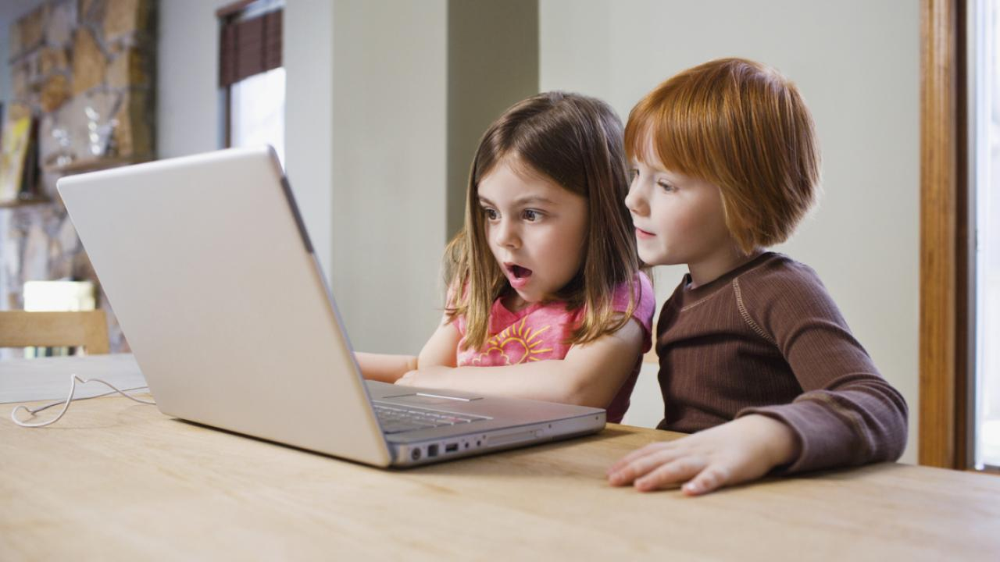

En este artículo hablaremos acerca de los peligros que corren los niños menores
al ocupar las redes sociales sin la vigilancia de un adulto o sin las restricciones que
deben de tener
o enlazar las cuentas de los padres a la de los hijos.
Desarrollo
Internet y las redes sociales pueden alentar fácilmente conductas inadecuadas debido al
anonimato o a la posibilidad
de poder falsear la identidad de la persona, como el exhibicionismo, la agresividad o el
engaño, por citar algunos los cuales son
Ciberbullying, ciberviolencia o violencia virtual,los niños que están vinculados con el
acoso escolar utilizan los medios de comunicación
como otra forma de ejercer violencia hacia sus iguales, especialmente desde el anonimato.
En un estudio se observó cómo los niños más pequeños (de 5 a 8 años) hacían un uso muy
limitado de las redes sociales virtuales, centrado, sobre todo,
en las aplicaciones de juegos que ofrece la red, articulándolo con la utilidad social que
ofrece, mientras que los niños a partir de los 9 años de edad
ya priorizaban la utilidad social por encima de las aplicaciones.
Motivación
Escogi este tema ya que en la actualidad se nota mucho más la presencia de menores en redes
sociales como facebook,instagram,snapchat,twitter,snapchat, etc,
este tipo de cosas los pone en peligro ya que siento que se exponen a los famosos hackers o
simplemente que los estafen por no tener conocimientos acerca de las redes sociales
pueden hablar con alguna persona falsa pudiendo ser una persona mayor a ellos.
Imagen alusiva de uso de redes sociales en menores
10 páginas más ocupadas
29/11/2021
Enlistado de páginas más visitadas en internet a nivel mundial
En este ranking enlistaremos las 10 páginas con más vistas
en internet en el mundo
Google
Youtube
Tmall
Baidu
Tencent QQ
Facebook
Sohu
Yahoo
Amazon
Wikipedia

Imagen que representa efectos negativos
top de páginas
donde se puede obtener más información
29/11/2021
Enlistado de páginas
A continuacion encontraras un listado de páginas para obtener más información sobre el tema
las páginas son confiafles.
Peligros en redes sociales para niños niñas adolescentes: grooming ciberbullying
ciberacoso sexting
En este video explica los peligros que trae el uso de redes sociales en menores de edad, los cuales
son el ciberbullying,
ciberacoso,sexting entre otros peligros, a parte de entrar a páginas web no aptas para la edad
recomendada que suguieren.
Es el conjunto de estrategias que una persona adulta desarrolla para ganarse la confianza de niños,
niñas y adolescentes a través de Internet con el fin último de obtener aprobaciones de índole
sexual.
Desde un acercamiento lleno de empatía y/o engaños se pasa al chantaje más cruel para obtener
imágenes comprometidas de él o la menor y, en casos extremos, pretender un encuentro en persona.
El groomind en muchas ocasiones puede ser el inicio de un acoso sexual.
Investigación
17/01/22
Estudio sobre las redes sociales y su implicación en la adolescencia
La implicación de las redes sociales en menores se ha vuelto una necesidad para poder
socializar
y poder encajar en el entorno que los rodea pero esto también
engloba peligros para esta generación que va creciendo y generando su
propia
personalidad,las redes sociales también ayudan para estar en comunicación en tiempo real con
familiares,amigos etc. Pero a veces se pierden y no saben diferenciar entre lo red social y
la
vida social.Pero ¿Qué riesgos se pueden encontrar cuando se utilizan estas redes
sociales con conocidos o desconocidos? Las redes sociales han venido a cambiar
la
forma de
comunicación. El estudió hecho en los años 2012 y 2013 arrojo que los niños de entre 11 y 13
años son los que más ocupan las redes sociales y la mayoría de sus seguidores no los conocen
o
simplemente son de otros países
Otro estudio arrojo que los niños entre 10 y 12 los padres no tienen conocimiento a cerca de
que
sus hijos tienen redes sociales y la mayoría de tiempo se la pasan en el teléfono, entrando
a
páginas desconocidas,platicando con perfiles falsos de los cuales ellos no tienen
conocimiento
que son perfiles falsos,u simplemente descargan aplicaciones las cuales traen restricción de
edad,pero si lo vemos por otro lado esto afecta bastante ya que académicamente están por
debajo
de su rendimiento normal y esto se debe a que la mayoría del tiempo dejan de estudiar de
hacer
tareas.
Otra cuestión importante es que más del 75% de los menores de 10 a 18 años dicen que
aprendieron
el funcionamiento del internet por ellos mismos y esto tiene un fuerte impacto ya que
¿Dónde están los papás?ya que ellos son los que deben de explicarles los
peligros
que comprende el tener redes sociales de esta forma se podría reducir el tiempo en el que
los
niños están conectados en redes sociales, otro problema encontrado es que la mayoría a la
hora
de entrar y registrarse en alguna red social el 90% de los adolescentes y niños se agregan
más
edad de la que tienen para poder tener un perfil en estas redes sociales.
Otro tema bastante delicado es la diversión en las redes sociales ya que
muchos cambian las salidas al parque con amigos por jugar en consolas y ahi es dónde es
bastante
importante la autoridad del adulto y es importante saber el manejo de los horarios. El 70%
de
los adolescentes su uso en las redes sociales son imparables y cuentan con al menos un
perfil de
red social los cuales tienen más recuento de facebook e instagram. Lo sorprendente es que la
mayoría lo hace por ser famoso y harían lo imposible por tener seguidores los cuáles a veces
terminan entrando en estos famosos retos algunos famosos fueron La ballena
azul,momo,entre otros.
La amistad en las redes sociales
El concepto de amistad en las redes sociales ha cambiado rotundamente ha cambiado ya que
muchos adolescentes etiquetan Amigos a personas que ni si quiera conocen.
Un nuevo amigo en las redes sociales en muchas veces es desconocido los cuales atraen
peligro.Entre las diferencias de hacer amigos hay diferencia en Facebook ya que a tus
contactos los maneja como amistades y Twitter los caracteriza como seguidores.Uno de los
problemas que repercute lo que hace Facebook es que ese "amigo" puede
comentar, ver, dar like a tus publicaciones al igual que tu tablón, otro punto a tratar es
que también a veces pueden checar tu localización y tu desarrollo en esta red social.
Otro punto bastante relevante aquí es que a veces estas redes sociales que ocupamos son a
veces sencillas de que los hackers se adueñen de tu cuenta como en muchos
casos ha pasado con cuentas de famosos y seguramente también con tu cuenta y aquí volvemos
al peligro, si un adolescente no sabe como ocultar cierta información y pone contraseñas no
seguras pueden checar donde vive, quienes son las personas de su circulo más cercano y a
partir de aquí surgen los famosos secuestros y extorsiones. O simplemente
veamos esto desde otro punto pongamos de ejemplo que el famos@ adolescente lo comienza a
seguir una chica o chico los cual les atrae,comienzan a generar la plática y en una de esas
aquel chico o chica por los que se sintieron atraídos por sus fotos que los cuales a veces
son fake ya le dieron su número e información personal y es aquí donde
agregamos otro riesgo a que menores desinformados que tienen una red social.
En la actualidad parece demasiado establecer relaciones con gente a la que damos like
simplemente porque sube un vídeo de gatitos, personas haciendo retos o que sube frases
inspiradas pero ¿Porque decimos que tenemos 400 amigos? cuando de
pequeños nos decían que se cuentan con los dedos de la mano. Lamentablemente esto se debe a
las ganas de ser famoso y generar dinero por este medio que sin duda alguna no esta mal
cuando lo tomas como pasatiempo y no como algo fundamental, pero ese no es el punto el punto
es que se esta perdiendo eso de que encontrar un amigo no es simplemente porque me dio like
ya es mi amigo, asi no es debes establecer lazos y comprobar que realmente esa persona te
busca no por tu fama en redes sociales sino como persona.
Ahora para terminar este subtema te dejare una pequeña conclusion de la palabra amistad, en
si una amistad es aquella que vas creando lazos durante varios años y que
estás seguro que tu cuentas con el al igual que el en ti, es aquella persona que te respeta
y tu a ella. Por eso te recomendamos darte tiempo para elegir a esos amigos o amigas con los
cuáles compartirás muchas experiencias y aventuras, pero sobre todo se tendrán confianza
para poder contarse sus problemas y logros, ya que la amistad es uno de los valores que vas
desarrollando conforme vas creciendo y te vas haciendo de amistades.
Quiénes somos en las redes sociales: mi yo y mi privacidad
Cuando un adolescente, menor o adulto abre una cuenta en alguna red social, esta
configurando un perfil que vera el mundo para que lo conozca si es que no la puso privada,
sabiendo que sus fotos y comentarios los verán personas que a veces no conocen. Las redes te
dejan crear un perfil conforme a el usuario guste o quiera pero muchas veces no lo hacen por
como se quieren ver sino como quieren que los vean los demás para poder encajar, ser
"famoso" en las redes sociales o simplemente ser el centro de atención de cierto círculo a
veces haciendo el ridículo.
En este proceso de crear el perfil se elije una foto, se agregan sus gustos y sus aficiones,
se agrega una pequeña descripción acerca de la persona o escoge alguna frase eso depende de
la persona,reflexionando un poco la tecnología nos da muchas facilidades ¿no?, pero
¿Qué nos afirma que lo que están poniendo su información es verdad? y que no
es una persona mayor, aunque muchas veces se confirma que lo que los perfiles ponen el 95%
coincide con su perfil, pero si alberga un peligro bastante grande los engaños o perfiles
falsos.
Todo este tema de la privacidad si ha sido una gran controversia en esto de las redes
sociales aunque es muy común que los perfiles publiquen su estado anímico o si están o no en
una relación por lo cuál se va perdiendo el sentido de la importancia de la privacidad que
depende mucho sobre que red social navegues sea Twitter,Facebook, Instagram entre otras.Esto
hace que a veces mucha gente evada las reglas que estas plataformas a veces te suguieren o
exigen lo cuál lo hacen para recibir más vistas y seguidores, aquí el lado bueno es que la
mayoría de las redes castigan al usuario si no sigue las normas.
A veces a la hora de registrarte debes de rellenar ciertos espacio con información personal
como por ejemplo nombre, fecha de nacimiento,país en donde vives,
correos,contraseñas y hasta a veces número telefónico a lo cual conlleva a
muchos peligros de que en cualquier momento pierdas esa cuenta y alguien más entre y lea
esta información "privada" o simplemente el no saber a quién o quienes le llegan esta
información súper valiosa y que puede quedar descubierta fácilmente, lo cual es bastante
importante y con esto esperamos que se genere un poco más de conciencia del porque es malo
que menores ocupen redes sociales.
 Cuida a los menores
Cuida a los menores
 10 páginas más ocupadas
10 páginas más ocupadas top de páginas
donde se puede obtener más información
top de páginas
donde se puede obtener más información 
 Investigación
Investigación